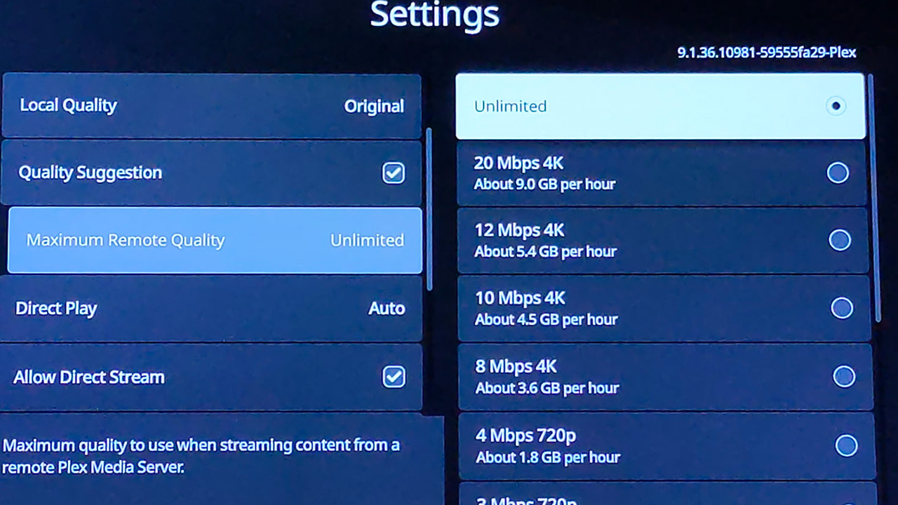
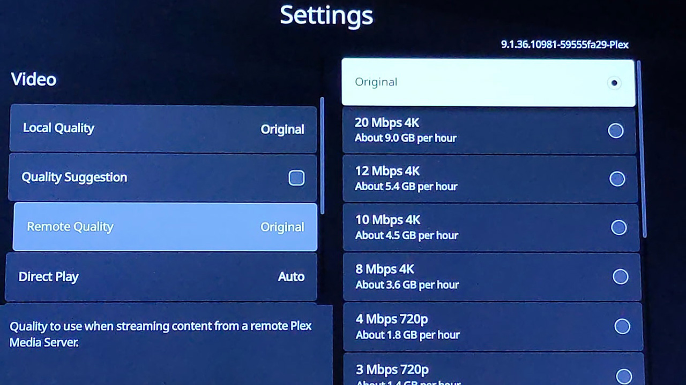

Welcome to Plex
Plex lets you watch my collection of movies and TV shows from anywhere – think of it as my personal Netflix.
It's free for you to use, and getting started takes about 5 minutes.
Start watching in 5 minutes
- Accept the invite.
Open the invitation email from Plex and create a free account (or sign in if you already have one).
(Can't find it? Check your spam folder.) - Install the free Plex app on your TV, streaming stick or phone, then sign in.
Pick Movies or TV Shows from the menu to browse for something to watch, or use search.
(Just make sure it lists my server Scylla as the source.)
Recommended extra steps
These extra steps should take 2 more minutes and will save you some hassle:
- Pin/favorite my libraries in your app. (Unfortunately there's no easy guide to this since each app is different.)
- In most mobile apps: select "Libraries" from the nav bar, find my libraries from Scylla, and favorite each one.
- In most TV apps: open the left-hand menu, find my libraries from Scylla, select the three-dot menu, and "pin" each one.
- Set video quality to "Original" or "Maximum".
Lower settings make my server convert the video to lower resolutions, which can cause buffering. - Set your subtitle preferences.
- Turn off Plex's ad-supported "Free Movies & TV" (Settings > Online Media Sources).
Please note
If you think someone would enjoy Plex, I can invite them separately.
Sign in on as many devices as you want, but only 2 can be playing at the same time.
Streaming uses a few GB per hour. If your internet has a monthly data cap, just be aware.
FAQ
-
How do I request something that's not on Plex yet?
If there's something you want to watch and can't find anywhere, let me know.
I can't realistically have every movie ever made, but I'm happy to look for it. -
Why did I see ads?
You'll only see ads if you're watching something from Plex's own streaming service.
You can disable their service in Settings > Online Media Sources so you only see content from my server. -
Can I download things to watch offline?
If that's something you need, let me know and I can enable this for you.
Settings to update
The settings that Plex apps use by default are not great and will likely result in a low-resolution stream that buffers frequently.
Use the quick steps for your app below to update them and get the best possible experience.
📱 iOS/Android app
- Tap your profile icon in the top right corner of the app
- Tap "Settings" then select "Video & Audio"
- Local Quality: Maximum
- Wi-Fi Quality: Maximum
- Allow Direct Play: On
- Allow Direct Stream: On
📺 Other streaming devices (Roku, Fire Stick, etc)
- In the left-hand menu, select "Settings"
- In the "Video" section:
- "Auto Adjust Quality" (if present): Off
- "Local Quality" and "Remote Quality": Original
- On some devices (like Rokus) you may need to uncheck the "Quality Suggestion" checkbox first
- If you do leave the "Quality Suggestion" option enabled, even with "Maximum Remote Quality" set to Unlimited Plex may try to stream at a lower quality which will likely result in buffering
- "Allow Direct Play": On
- "Allow Direct Stream": On
These may have different names depending on the platform — anywhere it asks for quality levels, set them to `Original` if available or `Maximum` otherwise.


Supported devices
Google TV, Apple TV, Roku, etc
Install Plex from your device's app store, open it, and follow the on-screen instructions to sign in.
This is the best way to watch.
Apple iOS or Android
Install Plex from the App Store or Google Play and sign in.
Good for watching on the go, and most phones support casting to a TV too.
Use the Plex desktop app.
Browsers work, but most content will play much better in a proper app.